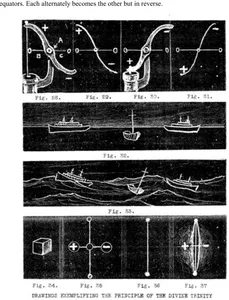
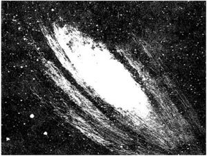

Part V (Lessons 17–20): The Fulcrum, The Lever & The Mystery of Life and Death¶

Lesson 17: The Fulcrum and the Lever
Before continuing our long journey from matter of earth to its Source “behind the scenes” in the invisible universe, I cannot restrain myself from telling you the great satisfaction it is giving us to hear how gloriously you are even now applying it to your lives. Our greatest desire is to “worthily fulfill our purpose”. Your letters convince us that we are, for when the little part of the journey you have already travelled has revealed so much to you already what a wonderful thing it will be when you actually KNOW that complexity is but the multiplied illusion you have been limited to during past ages and that “behind the scenes” is the REAL SIMPLICITY of ONE, centering an extended TWO, which will dissolve all complexity from your thinking forever.

Lesson 18: First Steps Toward the Mystery of Life and Death
The supreme mystery of life–growth–decay and death is the, as yet, greatest of all unanswered questions of the ages.
Lesson 19: Continuing the Mystery of Life and Death
During the whole course of these lessons we have endeavored to accentuate the underlying simplicity of Nature and Natural law and constantly repeat and exemplify the fact that every expression of motion in every creating thing is identical.
Lesson 20: Students’ Deeper Questions Answered
It is deeply gratifying to us that more and more students are finding that the answers to all situations in which they find themselves are within themselves. When you realize that going outside of your Consciousness in the direction of your senses, or the senses of any other person to whom you may appeal, is the surest way to defeat your purpose and complex your problem, you will ultimately learn the wisdom of seeking the answers to all questions within yourself. That is what we mean by asking God for a solution.